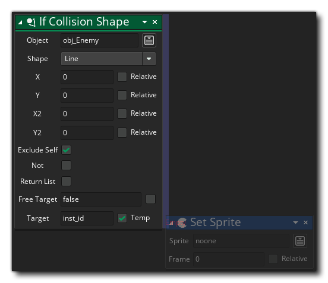
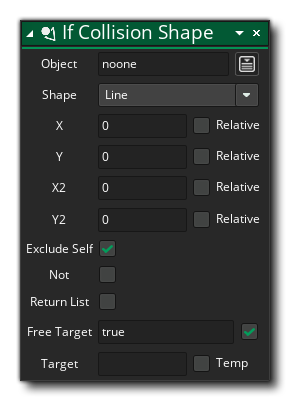

La description
Cette action est utilisée pour vérifier et voir s'il y a une collision avec une instance d'un objet donné dans une zone de forme donnée ou le long d'une ligne. Vous donnez la forme (rectangle, ellipse ou ligne), l'objet à vérifier, puis fournissez les coordonnées pour les coins supérieur gauche et inférieur droit de la forme utilisée, ou dans le cas d'une ligne, le début et la fin. positions finales. Ceux-ci peuvent être des positions absolues dans la salle de jeu, ou des positions relatives à l'instance exécutant l'action. Vous pouvez voir comment cela fonctionne dans l'image ci-dessous:
Comme vous pouvez le voir, les résultats dépendront du masque de collision de l'instance vérifiée, ce qui signifie que l'instance de l'objet que vous recherchez doit avoir un sprite assigné au sprite_index ou un sprite assigné à mask_index. Si ce n'est pas le cas, il ne sera pas détecté par ces fonctions, qu'il soit ou non un sprite. Il est à noter que toute instance qui tombe complètement dans les limites définies pour la forme de l'ellipse ou du rectangle renverra également une collision.
L'action renverra le mot-clé noone si aucune collision n'est renvoyée, ou retournera la valeur uniq ID de l'instance trouvée en collision. Vous pouvez également cocher la case "Non" pour vérifier s'il n'y a pas de collision à la position donnée. Notez que si plusieurs instances sont trouvées en collision, vous recevrez une seule valeur d'ID qui pourrait correspondre à l'une des instances (mais seulement une d'entre elles). Vous pouvez marquer la variable cible comme une variable temporaire (locale), ce qui signifie que l'action créera cette variable pour contenir la valeur de retour jusqu'à la fin de l'événement.
Notez que pour ajouter des actions dans un bloc "if", elles doivent être placées sur le côté de l'action, comme indiqué dans l'image ci-dessous: 

Syntaxe de l'action:
Arguments:
Argument La description Shape La forme à utiliser Object L'objet à vérifier pour les instances de x1 La position x à partir de y1 La position y à partir de x2 La position x pour se terminer à y2 La position y pour finir à Target La variable à cibler pour la valeur de retour de l'action
Exemple:

Le code de bloc d'action ci-dessus vérifie la collision avec toutes les instances de l'objet "obj_Player_Parent" le long d'un 200px sur l'instance d'appel. La valeur de retour de l'action est stockée dans une variable temporaire (locale), puis une vérification est effectuée pour voir si la valeur renvoyée est une instance qui existe dans la pièce. Si c'est le cas, l'instance a une valeur supprimée d'une variable d'instance.